JS中的类型转换&内存图&GC&深拷贝
类型转换
| 左👉右 | number | string | boolean | null | undefined | object |
|---|---|---|---|---|---|---|
| number | n.toString() (6).toString() 或var num = 6; num.toString() |
Boolean(n) | ||||
| string | Number(‘str’) | Boolean() | ||||
| boolean | Number(true) | .toString() | ||||
| null | Number() 转为0 |
无法用toString | Boolean() | |||
| undefined | Number() 转为NaN |
无法用toString | Boolean() | |||
| object | 对象和函数转为NaN，数组看情况 | 使用toString ‘[object Object]’ |
Boolean() |
🛵老司机妙招
快速转换成string类型：xx + ‘’==1 | 1+'' //'1' |
1 | !!undefined //false |
- xx - 0
- +xx
1 | +'s' //NaN |
转换方法总结
转换为字符串的方法
String(x)
x.toString()
区别
.toString()不可用于null和undefined而String()可以。
注：数字或对象使用toString方法需要加上括号，否则报错666.toString()❌ (666).toString() ✔
{}.toString() ❌ ({}).toString() ✔
.toString可支持将数字转为不同进制字符串，例如(2).toString(2)//“10”
可支持.toString(2)|.toString(8)|.toString(10)括号内不写默认为10|.toString(16)
x+‘’
转换为数字的方法
- Number(xx)
- parseInt(xx)
- parseFloat(xx)
- xx - 0
- +xx
❗ 注意ParseInt
完整写法是parseInt(value,radix)，value为要被解析的值，radix为基数。
parseInt会(从左到右)从第一个字符开始解析，直到碰到了无法解析为数字的东西(如unicode字母等)，前面的解析出来多少是多少，打印出多少。例如：
parseInt(‘0b110’) //输出0
parseInt([1,2,3]) //输出1
含义是将参数value看作radix进制数，返回十进制数值。例如：
1 | parseInt('123', 5) // 将'123'看作5进制数，返回十进制数38 => 1*5^2 + 2*5^1 + 3*5^0 = 38 |
先回顾下二进制、八进制、十六进制数表示：
0b开头代表二进制 | 0开头代表八进制 | 0x开头代表十六进制 (字母大小写均可)
在没有指定基数radix或者基数为0时，有以下处理
当参数value为数字时：
- 以0b开头，则基数是2(二进制)
- 以0开头，则基数是8(八进制)
- 以0x开头，则基数是16(十六进制)
1
2
3
4
5
6
7
8parseInt(017) 相当于parseInt(017,10)|parseInt(017,0)
也相当于直接在浏览器控制台输入 017 得出一个数值
parseInt(017) //15 , 1*8^1+7*8^0 = 15
017 //15 , 浏览器将其视为了八进制数，所以转换成十进制数后得到15
0789 //789,由于到达了8，浏览器会智能地将它视为十进制数，输出789
parseInt(017,8) //13,因为浏览器自动将017转为15,所以其实是parseInt(15,8),得到13
parseInt(17,8) //15,因为没有0开头,不知道他是八进制数，所以用给的radix参数来当作8进制数处理
//即 1*8^1+7*8^0 = 15 ，相当于parseInt(017)当参数value为字符串时：
- 以0b开头，并不会被识别为二进制，而是将b当为字符，所以解析到b之前中断，输出0
- 以0开头，基数是10(十进制)或8(八进制)，ES5规定为10，但可能有的浏览器仍为8,一般用10
- 以0x开头，则基数是16(十六进制)
- 其他任何开头视为基数10(十进制)
1
2
3
4
5
6
7
8parseInt('0b111') //输出0
parseInt('0789') //789,视为十进制，若为八进制是不会出现8和9的
parseInt('0789',8) //7,浏览器自动将'0789'转为了789,只能解析出小于8的，所以是7
parseInt('0x178') //376,1*16^2+7*16+8*1=376，相当于parseInt('0x178',16)
parseInt('0x178',10) //0，若视为其他进制，则x越不过去，解析到x前停下，所以是0
傻傻分不清楚：
parseInt('0x011',16) //17,1*16^1+1*16^0=17
parseInt(0x011,16) //23 , 0x011自动被转为了17,所以是parseInt(17,16),1*16+7*1=23
有很多坑，具体可以看MDN资料：
https://developer.mozilla.org/zh-CN/docs/Web/JavaScript/Reference/Global_Objects/parseInt
转换为布尔值的方法
- Boolean(x)
- !!x
只有0|NaN|‘’|undefined|null 是5个falsy值，转成boolean为false，其他所有都会转成true
所有对象转为boolean都为true，包括空对象、空数组、空函数等
对象中
var obj = {null:0,undefined:0}
obj[null]==obj[‘null’]\==obj.null //都打印出0，null自动转换为了‘null’
obj[undefined]==obj[‘undefined’]\==obj.undefined//都打出0，undefined自动转成了‘undefined’
内存图
js内存分配
js引擎将内存分成两大块
代码区：存代码 a
数据区：‘1’ 2 {}
栈内存(stack)和堆内存(heap)
栈内存可以存基本类型的值或者对应堆内存的地址
堆内存可以存复杂类型的值(如对象)，对象属性的值又可以是地址，这个地址再对应heap中的地址所对应的内容。
js中数字是以64位浮点数存的
64位(2^64^)可以表示目前市面上任意大小内存的任一个地址
js存字符，每个字符16位
数字64，字符16(后来更新了)
var a = 2
先进行变量提升
若用栈内存按顺序存对象object，一旦要改对象的属性或者新增属性，就需要把之前对象后面的数据往后挪，特别的麻烦。所以只存一个地址，例如是100，100对应堆内存中的100号内存位置，这儿存着整个对象。
然后如果要改对象属性或者给对象加属性，直接根据地址100找到堆内存对应位置，然后修改或添加即可。
新加对象的话，就在栈内存新存一个地址，例如是200。则地址100对应对象obj1，地址200对应对象obj2。
若写一个对象赋值语句obj2 = obj1
然后对象的赋值实际上是将obj1对应的地址赋到了obj2那个位置，然后两个栈内存位置存的地址都是100了，obj1和obj2都指向了100。并没有多出的拷贝。见下图：
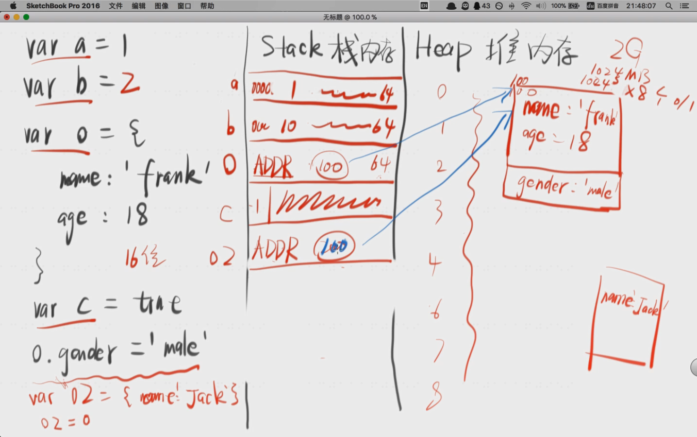
不同数据类型的存储
- 简单数据类型
- 直接存在Stack栈内存 num|str|symbol|bool|null|undefined
- 复杂数据类型
- 把Heap堆内存地址存到Stack栈，内容存在Heap堆内存中 object对象
变量跟对象的关系是引用关系，没有直接存你，而是存的你的地址。
var obj={name:frank} //变量obj是对象的引用，obj存的是对象的地址而不是对象的值本身
❗ 切记
赋值，等于号只做一件事情，就是把等于号右边的东西存到等于号左边的东西里头。
赋值必须先确定等号右边的值，然后再开始赋值。
例子：
var a = {name:‘a’};
b = a;
b = {name:‘b’};
console.log(a.name); //画内存图
将新对象赋给b 改的是b存的地址，而不会改heap中原有的内容
将新数字(或其他基本类型)赋给b 则b位置存的地址会被新的值覆盖掉
几个题目例子，用内存图弄清对象的赋值
基本类型之间的赋值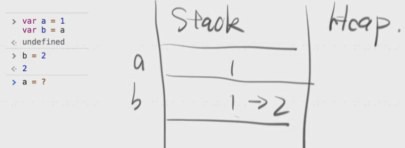
直接赋值给对象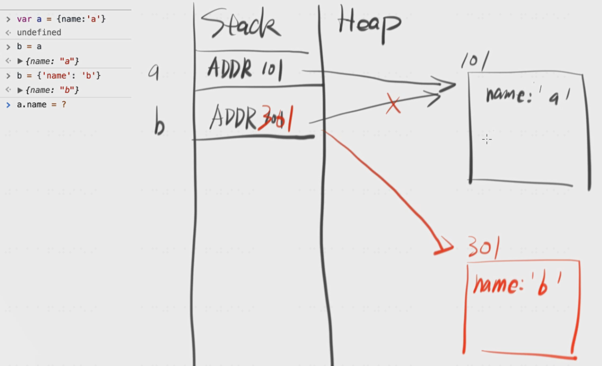
赋值给对象的属性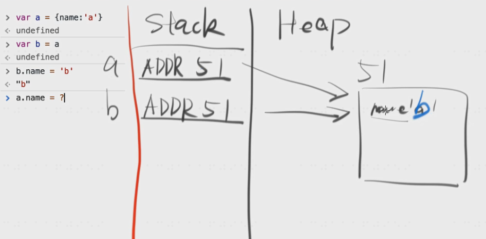
将基本类型值赋值给原来的对象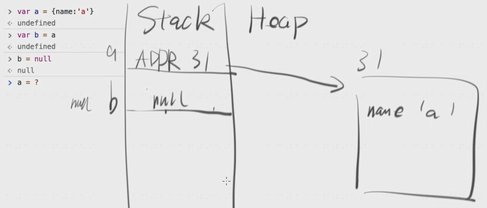
var a ={};a.self=a; a.self.self.self.self可以取到么？ //可以
其实heap里头只有一个对象，从stack找到heap，然后self的值addr33又找到了heap中33号地址位置的东西(就是自己)，然后不停地调自己。
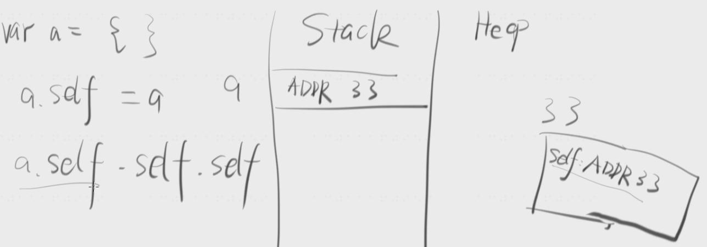
若是var a = {self:a};a.self.self.self //就会报错，
因为赋值操作必须先确定右边的值，而第一次右边的值中的a是undefined 所以 a = {self:undefined};
再来一次a = {self:a};就会变成 a = {self:{self:undefined}},再打一次就会再嵌套一层，不打就停在那一层。
❗ 坑🕳
alert会调用toString()方法
a.x = a ={n:2};
先确定a，而不是从右往左算到最后才确定a，一开始就确定好了a，然后a={n:2}时会再把a存的地址改了
多复习回顾几次:
GC垃圾回收
GC:Garbage Collecation
🖊核心
如果一个对象没有被引用，他就是垃圾，将会被回收。
有人罩着就不回收，没人罩着就回收。
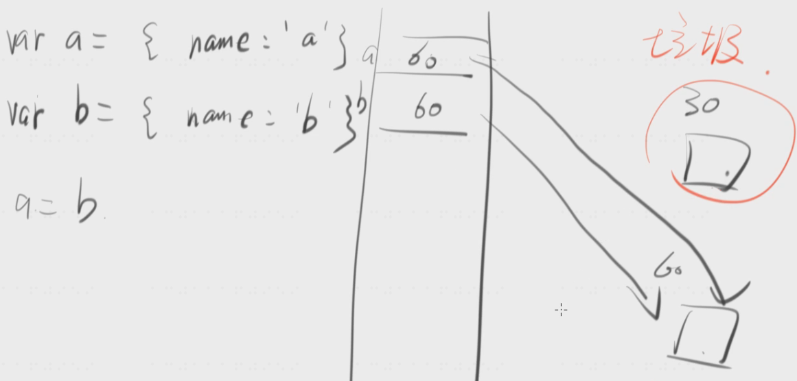
若页面关闭了，document的click事件对应的function全成了垃圾。
但ie有bug，不会回收，可加以下代码解决
window.onunload = function(){document.body.onclick = null;}
题目1
hard1
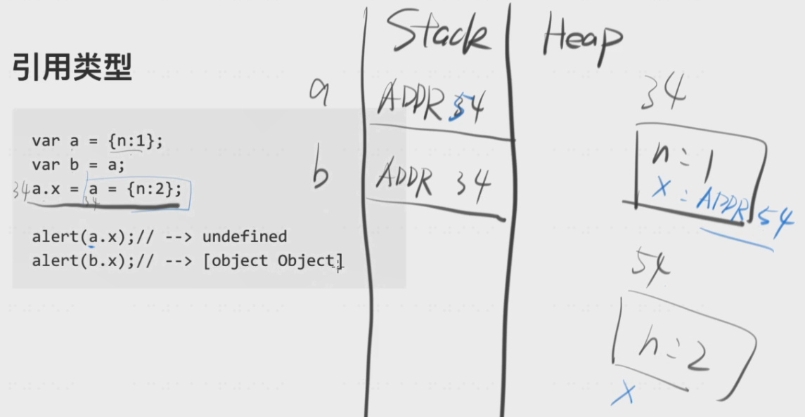
题目2
var fn = function(){}
document.body.onclick = fn
fn = null
问function是不是垃圾
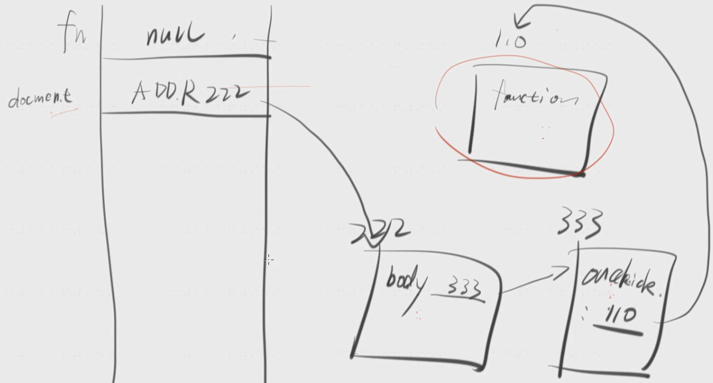
var fn = function(){}
document.body.onclick = fn
fn = null
document.body.onclick = null
问function是不是垃圾
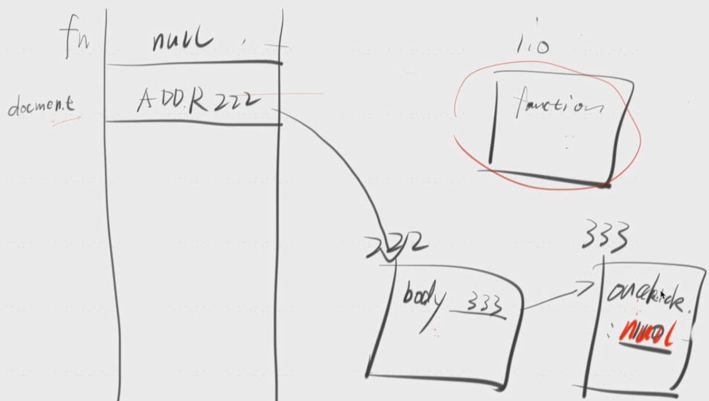
深拷贝 VS 浅拷贝
深拷贝
var a = 1;
var b = a;
b变不影响a，深拷贝
基本类型的赋值，为深拷贝
浅拷贝
var a = {name:‘a’}
var b = a
b.name = ‘b’
a.name //也是b
b变a也变，浅拷贝
对象的深拷贝，见下图
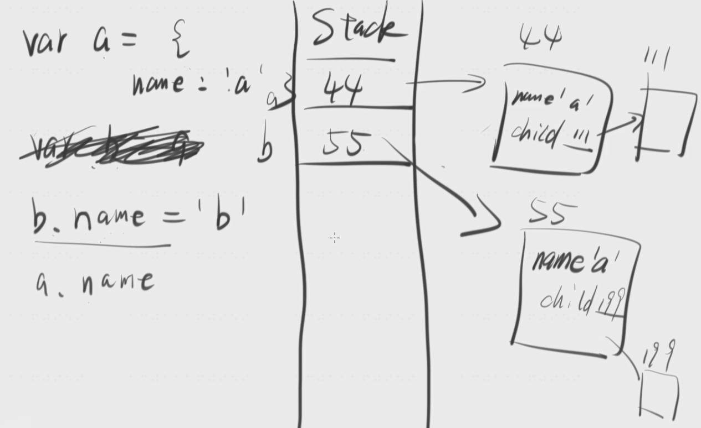
深拷贝如何实现，请听下回分解